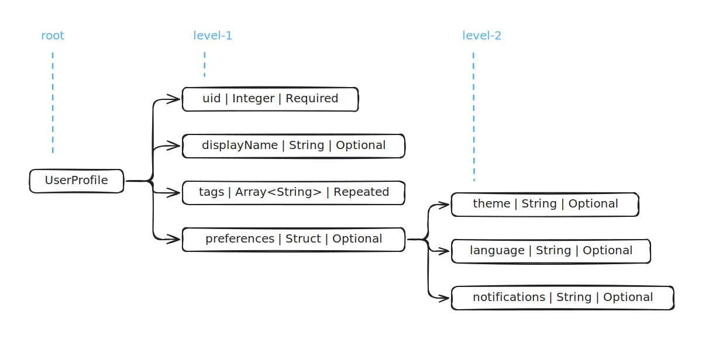

Figure 1. Visualization of a nested data structure
Figure 1. Visualization of a nested data structureTo be filled in later.
Conceptually, record shredding is a flattening of a nested data structure into a flat, relational format. Record assembly is the reconstructing of that shredded structure back into its original nested form.
Below is a visualization of a UserProfile object which has three levels of nesting.
Figure 1. Visualization of a nested data structure
The primitive values appear in the leaf nodes at levels two and three. It is common to use the dot-separated notation to represent accessing a leaf node value (e.g. preferences.theme = "dark"). The array index notation is used to represent accessing the individual values in the repeated (array) field like tags (e.g. tags[0] = "builder", tags [1] = "diy").
After shredding the flattened UserProfile value looks like any other row in a relational table. The two array values in tags are expanded into separate rows. This is similar to using the UNNEST function in SQL which takes the array value in tags as input, and returns rows for each element in the array.
| Flattened UserProfile After Record Shredding | ||||
|---|---|---|---|---|
| uid | displayName | tags | preferences.theme | preferences.notifications |
| 9012 | Bob The Builder | builder | dark | false |
| 9012 | Bob The Builder | diy | dark | false |
Next record assembly takes these row values and the column names as input, to fully reconstruct the nested data structure back to its original form.
{
"uid": "9012",
"displayName": "Bob The Builder",
"tags": [
"builder",
"diy"
],
"preferences": {
"theme": "dark",
"notifications": false
}
}Record assembly also works with just a subset of columns. This is a useful feature which closely matches real-world usage. Most queries only include a small set of columns relevant to the query. There is no good reason to materialize the a complete UserProfile if the query requires only parts of it.
If the columns specified in the query are uid and preferences.notifications then record assembly has to read only these columns. It can skip the remaining columns which are not relevant to the query. The reassembled UserProfile object preserves its original structure but only contains these fields:
{
"uid": "9012",
"preferences": {
"notifications": false
}
}It is implied above that record shredding and assembly uses a columnar data layout. And this is critical for reassembly of partial projection from the shredded values in storage. It is an efficient representation because only the subset of columns required for reassembly have to be scanned.
Typically relational data is associated with row storage. If you access the row (say id = 103) it retrieves all the related attributes from storage and writes (103, "Eve", "eavesdropper") to memory. This matches the access patterns of transactional applications which needs to read or write a single row or a very small set of rows at a time. The row storage is optimized for heavy read-write workloads which works on a single row or a very small set of rows.
| Row Format | ||
|---|---|---|
| id | username | role |
| 101 | Alice | sender |
| 102 | Bob | receiver |
| 103 | Eve | eavesdropper |
| 104 | Trudy | intruder |
The row storage format is not optimized for access patterns of analytical queries. For example to compute the value of COUNT (DISTINCT role) all data will have to be retrieved from storage, written to memory and scanned to compute the result. Even though the id and username columns serves no purpose in computing the final result, they are still materialized into memory from storage. This is unavoidable because row value are stored next to each other.
If the data is instead stored in a columnar layout, only the role column needs to be scanned to compute the final result. In this layout the values of a column are stored next to each other.
| Columnar Format | ||
|---|---|---|
| id | username | role |
| 101 | Alice | sender |
| 102 | Bob | receiver |
| 103 | Eve | eavesdropper |
| 104 | Trudy | intruder |
In database terms this optimization is known as projection pushdown. It helps optimize the amount of disk I/O necessary for scanning data from physical storage.
The schema is the single source of truth which is used for implementing record shredding and assembly.
A schema is a collection of fields. Each field has a name, a data type and a marker which identifies if the field is optional or not.
A repeated field is an array of values. The data type can be either a primitive type or even a struct data type. The order of values is important and is preserved during shredding and reassembly.
A Struct data type adds another level of nesting and contains one or more fields.
 Figure 2. Schema of UserProfile object
The example below (same as Figure 1.) is a valid construction of the UserProfile schema. The preferences.language property is not present in this instance. In the schema, the language field is marked as an optional field.
{
"uid": "9012",
"displayName": "Bob The Builder",
"tags": [
"builder",
"diy"
],
"preferences": {
"theme": "dark",
"notifications": false
}
}In the next example, the preferences property is not present. In the schema, the preferences field is marked as an optional field.
{
"uid": "1234",
"displayName": "Alice Wonderland",
"tags": [
"reader",
"dreamer"
]
}In the next example, the preferences.language and preferences.notifications properties are not present. In the schema both the fields are marked as optional.
{
"uid": "5678",
"displayName": "Chris Coder",
"tags": [
"developer",
"python",
"oss"
],
"preferences": {
"theme": "light"
}
}The recurring theme here is that by looking at an instance of a nested structure by itself, it is not possible to identify which properties are missing from it. We need the schema to validate an instance and also know which properties are not present in it.
A desirable property of record shredding is that it should not inflate the size of the stored nested data structure. If the shredded encoding ended up being smaller than directly storing the nested data structure itself, that will be a great win.
The abstract representation of record shredding introduced in the beginning is not well-designed. The most obvious issue is the data redundancy required for the tags repeated field. The number of rows in this representation depends on the cardinality (number of elements) of the tags property.
Also to keep complexity low without sacrificing the essence of how record shredding works we deliberately did not tackle the problem of how missing properties should be represented.
The three examples of UserProfile from above after shredding using the Dremel technique is represented as shown below.
| Dremel Encoding | ||||
|---|---|---|---|---|
| uid | displayName | tags | preferences.theme | preferences.notifications |
| 1234 | Alice Wonderland | reader | light | false |
| 5678 | Chris Coder | dreamer | dark | |
| 9012 | Bob The Builder | developer | ||
| python | ||||
| oss | ||||
| builder | ||||
| diy | ||||
This representation wastes no space for representing properties which are missing in the values. The cardinality of a repeated field like tags has no effect on other columns. This representation ends up taking less space than directly storing the UserProfile objects.
But they do not line up nicely into rows which informs you where a record begins and ends just by visual inspection. So if you are thinking there is not enough information here to be able to reassemble the original values, you are on the right track.
The key insight from the Dremel encoding is in recognizing that the structure of nested data structure is also a part of the shredded representation.
The UserProfile schema (see Figure 2) contains five optional fields, and one repeated field. An optional field is a property which may or may not be present in a data instance. A repeated field maybe empty or contain any number of elements.
So a single schema definition can lead to a variety of structures as shown below.
 Figure 3. Structure of UserProfile Objects
Figure 3. Structure of UserProfile Objects
The elegance of the Dremel encoding is in how it is able to represent any structure which can arise from a schema with just two computed numeric values. The first metadata tracks the presence of optional fields in a data instance and is known as definition levels. The second metadata is related to the elements which are part of repeated (array) fields and is known as repetition levels.
Pending: